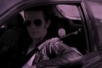

"THE 405" Lyrics
Music and Lyrics ©1984 Billy Freehold and the Surface Street Band
Rollin' up to Jessie's house
In a beat-up Chevrolet
Wind through her hair is blowin' south
As if guiding us that way

Jessie, this machine
Can take us far away from here
We'll follow that open road
Till the city disappears
Jessie, are you ready to ride?
My door is open, just climb inside
By sundown we'll be in Mexico
All right, I think we'll take the 405
Who-oa...
We're gonna break this town and head out for the border
You'll wake up in my arms in Baja California
Beyond the horizon is all that we've sought
But gosh, this traffic is heavier than I thought
Jessie, what do you think?
Should I take this exit here?
If we just get past the interchange
I know we'll be in the clear
This city's tryin’ to hold us in
But babe, we're bustin' out
You know what? Forget the freeway
We're gonna take my secret route
We're gonna get off on Sawtelle
Take National for a spell
Although now it looks like some other drivers
Know this trick as well
But no matter 'cause
We'll break this town and head out for the border
You'll wake up in my arms in Baja California
A wide-open country is waiting for us
If we can just get out from behind this bus
The thing about woman drivers, Jessie
That makes a man wanna explode
These girls comb their hair in rearview mirrors
When they oughta keep their eyes on the road
I mean these fucking city planners
Can't even put in a left-turn light
Don't they realize some of us have dreams to chase
In Mexico tonight?!
[Instrumental]
1-2-3-4-5-6-7-8-9-10-11!
We'll break this town and head out for the border
Or at least a motel in Torrance, California
Like doves on the wind, we’re sailing away
Fuck, we should've left earlier in the day
Come on! Move!
Aw, why is this lane closed?!
Would you look at this guy?
I'll bet you he doesn't even have a license.
Oh what do you mean that is racist?
It has nothing to do with his race. It's how he's driving.
HEY, THE LIGHT IS GREEN! THE LIGHT IS GREEN!
Hey, whuh nuh nuh-- Jessie! Where you going, baby?
Get back the car.
Are you gonna walk to Baja?
Fine! Who needs ya? Maybe I'll just ...
...pull over and go to Chipotle.